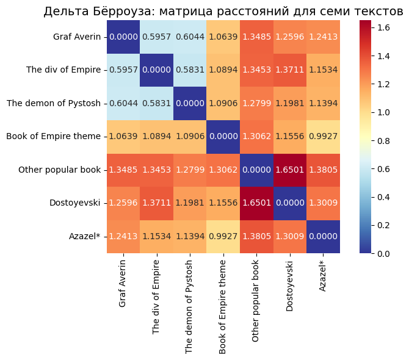
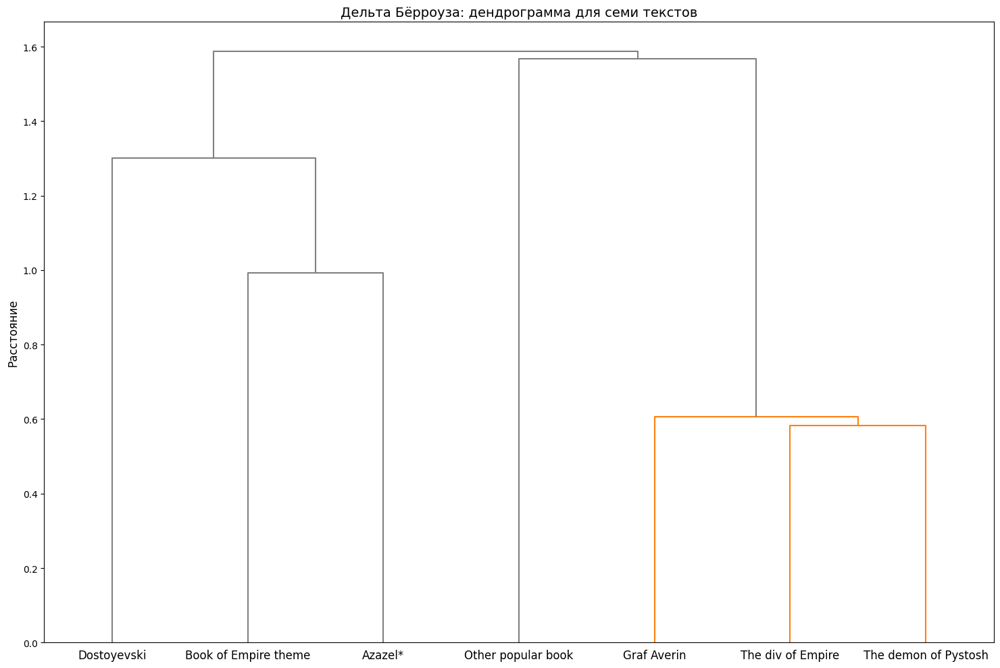

Распределение ключевых слов по книгам
Тексты для сопоставления
- Дмитрий Билик. Имперский сыщик: Дело о тайном культе
- Лия Арден. Мара и Морок
- Ф. М. Достоевский. Преступление и наказание.
- Б. Акунин. Азазель* (*Настоящий материал произведен иностранным агентом)

Дендрограмма